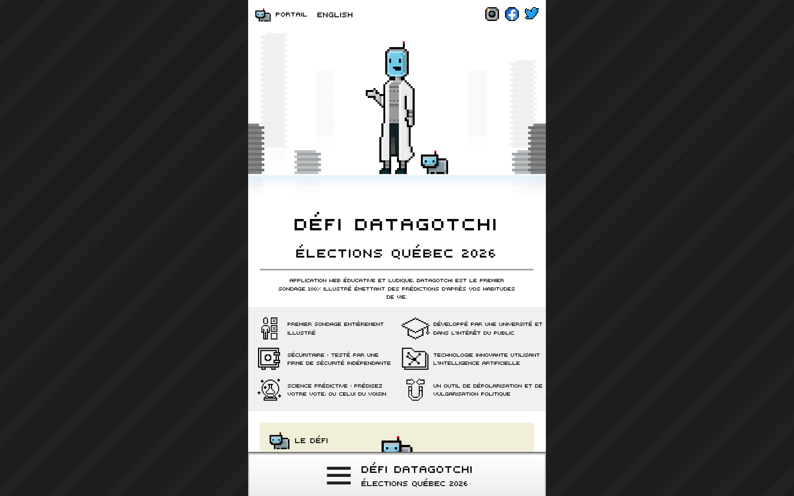
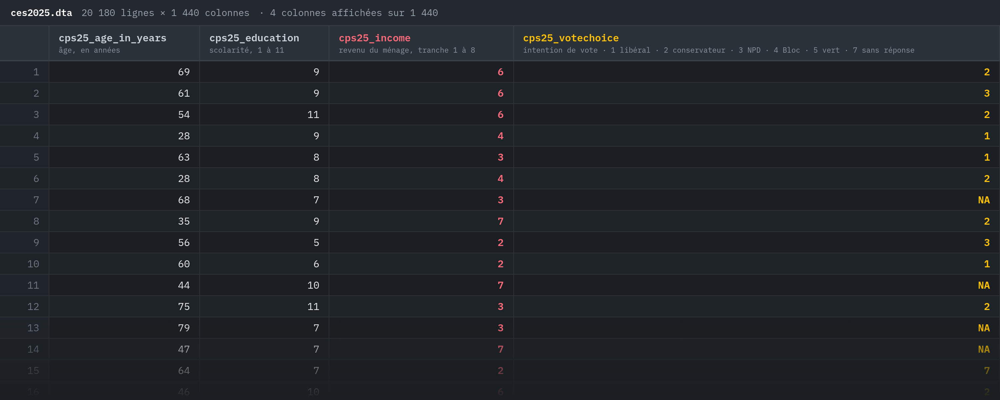
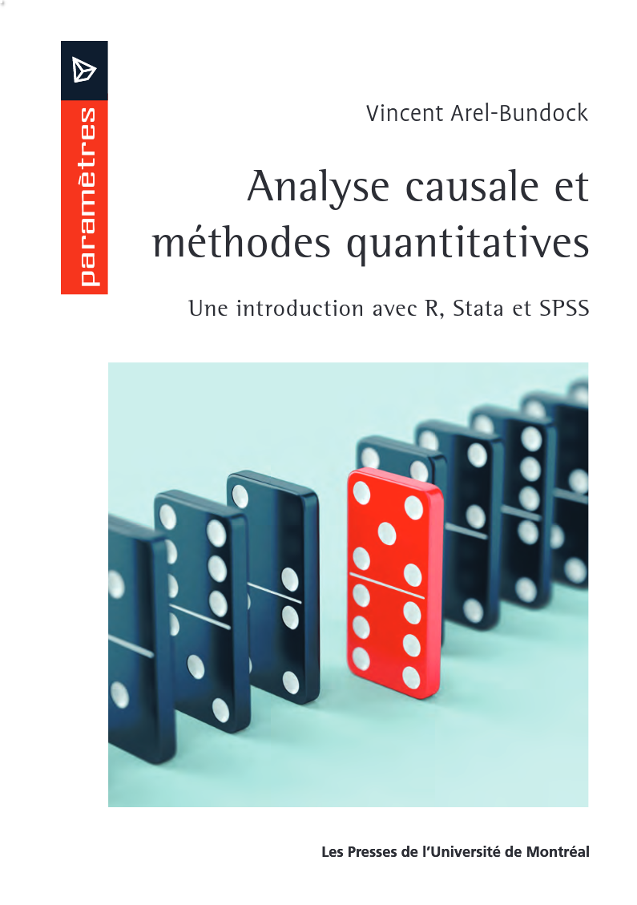

Laurence-Olivier M. FoisyPOL-2000 · séance 1 · jeu 3 sept
POL-2000 · Méthodologie quantitative
Introduction et les éléments fondamentaux de la recherche
Séance 1 · jeudi 3 septembre 2026
Département de science politique Faculté des sciences socialesAutomne 2026
À propos de moiPOL-2000 · séance 1 · jeu 3 sept
À propos de moi
Laurence-Olivier M. Foisy
Enseignement du parcours L'intelligence artificielle et la rechercheUniversité Laval · EIOM 2026
Enseignement du cours Introduction aux mégadonnées en sciences socialesUniversité de Montréal · FAS-1001
Doctorat en science politique, en coursUniversité Laval
Maîtrise en études de la paix internationaleUniversité Soka, Japon
Baccalauréat en études est-asiatiquesUniversité de Montréal
mail@mfoisy.com — deux semaines. Ensuite, Slack.
Un tour de sallePOL-2000 · séance 1 · jeu 3 sept
À main levée
Un cours de statistiques au cégep ?
Une ligne de code, n'importe laquelle ?
Qui paye pour un abonnement IA ?
Ce cours vous fait peur ?
Pourquoi ce coursPOL-2000 · séance 1 · jeu 3 sept
La vraie question
« Pourquoi est-ce que je suis obligé de suivre ce maudit cours là ? »
« Je ne veux même pas faire de recherche. »
Pourquoi ce coursPOL-2000 · séance 1 · jeu 3 sept
Onze réponses
1
Parce que le marché du travail s'arrache ces compétences.
2
Parce que vous étudiez en science politique pour devenir politologue, et la science politique est la science sociale la plus quantitative.
3
Parce que ça rend meilleur pour penser et résoudre des problèmes.
4
Parce que ça change la façon de voir le monde.
5
Parce qu'il y a plus de données que de gens pour les analyser.
6
Parce que vous ne lirez plus jamais un sondage sans vous demander comment il a été fait.
7
Parce que « corrélation n'est pas causalité », c'est pas juste un slogan.
8
Parce que vous allez mieux argumenter quand quelqu'un vous parlera de statistiques.
9
Parce que ces compétences se transfèrent partout : ONG, fonction publique, politique, privé, journalisme.
10
Parce que les décisions qui vous concernent (élections, politiques, algorithmes) se prennent avec ces outils.
?
Parce que c'est le fun.
Vraiment.
La CLESSNPOL-2000 · séance 1 · jeu 3 sept
Ce qu'on fait avec ça, concrètement
La CLESSN
Chaire de leadership en enseignement des sciences sociales numériques · Université Laval
Trois projets en ligne, en ce moment.
La CLESSNPOL-2000 · séance 1 · jeu 3 sept
DatagotchiQuébec 2026 · un sondage illustré qui prédit votre vote d'après vos habitudes de vie
CAPTURE · cliquez pour le direct
🔒quebec.datagotchi.com
DatagotchiQuébec 2026 · un sondage illustré qui prédit votre vote d'après vos habitudes de vie

La CLESSNPOL-2000 · séance 1 · jeu 3 sept
La Vitrine démocratiqueavec le CAPP · médias et discours politiques du Québec, analysés six fois par jour
CAPTURE · cliquez pour le direct
🔒vitrinedemocratique.com
La Vitrine démocratiqueavec le CAPP · médias et discours politiques du Québec, analysés six fois par jour
La CLESSNPOL-2000 · séance 1 · jeu 3 sept
Prof. Datagotchiun assistant fondé sur 153 entrevues des cinq partis — mot pour mot, horodatage à l'appui
CAPTURE · cliquez pour le direct
🔒prof-datagotchi.com
Prof. Datagotchiun assistant fondé sur 153 entrevues des cinq partis — mot pour mot, horodatage à l'appui
Une questionPOL-2000 · séance 1 · jeu 3 sept
Le revenu influence-t-il le vote ?
Une questionPOL-2000 · séance 1 · jeu 3 sept
Comment le saurait-on ?
Une questionPOL-2000 · séance 1 · jeu 3 sept

Compter : l'Étude électorale canadienne 2025 · 20 180 répondant.e.s · 1 440 colonnes, dont ces quatre
Une questionPOL-2000 · séance 1 · jeu 3 sept
Une ligne de R
Pas de panique : vous n'avez pas à faire le calcul. Seulement à savoir que la fonction existe.
lm(vote_conservateur ~ cps25_income, data = ces)
vote_conservateur vaut 1 si la personne compte voter conservateur, 0 sinon · cps25_income : tranche de revenu, 1 à 8
Coefficient
Erreur-type
t
p
Constante
0,284***
0,012
24,31
< 0,001
Revenu (tranche 1 à 8)
0,010***
0,002
4,3
< 0,001
N = 12 816 · R² = 0,0014 · lecture : +1,0 point de pourcentage de vote conservateur par tranche de revenu *** p < 0,001 · ** p < 0,01 · * p < 0,05
Le plan de coursPOL-2000 · séance 1 · jeu 3 sept
Le plan de cours
pol2000.com/syllabus
Le plan de coursPOL-2000 · séance 1 · jeu 3 sept
14du 3 septembre au 10 décembre
Quatorze séances, trois parties
Le plan de coursPOL-2000 · séance 1 · jeu 3 sept
Les évaluations
Examen 115 %
Examen 215 %
Examen 315 %
Mi-session20 %
Final25 %
DC5 %
DC5 %
Le plan de coursPOL-2000 · séance 1 · jeu 3 sept
Les examens
1
Chez vous, sur R24 sept. → dim. 4 oct. · l'outil, c'est l'ordinateur
2
En classe, sur papierjeu. 12 nov. · 17h20 · 1 h · cahier ouvert
3
En classe, sur papierjeu. 10 déc. · 17h20 · 1 h · cahier ouvert
Le plan de coursPOL-2000 · séance 1 · jeu 3 sept
Les travaux personnels (TP) : un seul projet en deux temps
MI-SESSION · 20 % · DIM. 25 OCT.
1La question
2X et Y
3Les hypothèses, et leur nulle
4La base de données
5Un graphe orienté acyclique
6Les statistiques descriptives
7La régression et son tableau
8L'interprétation, les biais, les limites
1Le devisVous posez la question. Je corrige.
↓
2Le projet completLe même document, quatre sections de plus.
La rétroaction arrive avant que vous écriviez la suite.
Le plan de coursPOL-2000 · séance 1 · jeu 3 sept
Datacamp
Un exercice par semaine, chez vous. Comme celui-ci.Gratuit pour le cours · corrigé sur-le-champ · 10 % de la note · essayez-le maintenant : Run
data(presidents)# `presidents` : la cote d'approbation des présidents américains,
# chaque trimestre, de 1945 à 1974. Cliquez Run pour la voir.
presidents
# À vous : calculez la cote moyenne avec mean().
# Il y a des valeurs manquantes (NA) : ajoutez na.rm = TRUE.presidents
mean(presidents, na.rm = TRUE)test_function("mean", args = c("x", "na.rm"))
success_msg("Bravo ! Votre premier calcul en R, sur de vraies données politiques.")
dim. 25 oct. · 5 %ven. 18 déc. · 5 %
Le plan de coursPOL-2000 · séance 1 · jeu 3 sept
Un retard
100 %à temps
90 %+1 jour
80 %+2 jours
70 %+3 jours
0+4 jours
Le plan de coursPOL-2000 · séance 1 · jeu 3 sept
L'intelligence artificielle
L'IA pour faire mieux, pas pour en faire moins.Un travail paresseux avec l'IA se repère en dix secondes. L'effort compte dans la note. Son absence aussi.
Le matérielPOL-2000 · séance 1 · jeu 3 sept
Positron
L'éditeur, par Posit. Gratuit. Là où vous écrirez, verrez et corrigerez votre code.
# generalTout le monde · annonces et questions générales
Laurence-Olivier M. Foisyaujourd'hui, 15h30
Bienvenue dans POL-2000. À partir de la semaine 3, c'est ici qu'on se parle : questions, blocages, rendez-vous. Je ne réponds plus aux courriels.
Jules Piral, Marc-Antoine Dupuis et Adam Ménard ont rejoint le canal.
Marc-Antoine Dupuis15h34
Le canal #aide-metho est pour que vous puissiez poser vos questions sur la méthodologie et les exercices.
Jules Piral est en train d'écrire…
Message #general⏎
Le matérielPOL-2000 · séance 1 · jeu 3 sept
Le livre

OUVRAGE DE RÉFÉRENCEAnalyse causale et méthodes quantitativesVincent Arel-Bundock · Presses de l'Université de Montréal · 2021
Toute la matière du cours, dans le même ordre.
gratuit en PDF · pum.umontreal.ca
Le plan de coursPOL-2000 · séance 1 · jeu 3 sept
L'équipe
#Slackun seul endroit, pour toute l'équipe, en tout temps
EnseignantLaurence-Olivier M. Foisyle cours, le plan, les notes, les cas particuliers
AuxiliaireJules PiralR, les exercices, les travaux
AuxiliaireMarc-Antoine DupuisR, les exercices, les travaux
TuteurAdam Ménardquand ça décroche : on reprend depuis le début
8 octobre et 26 novembre · rencontres individuelles, toute l'équipepol2000.com · rendez-vous dans les plages publiées
Le plan de coursPOL-2000 · séance 1 · jeu 3 sept
Ce cours n'est pas enregistré.
Il se donne ici, le jeudi, à 15h30.
La version en ligne, asynchrone, existe — à l'hiver.
Le plan de coursPOL-2000 · séance 1 · jeu 3 sept
Des objections ?
C'est maintenant.
PausePOL-2000 · séance 1 · jeu 3 sept
Pause
Quinze minutes.
Les éléments fondamentauxPOL-2000 · séance 1 · jeu 3 sept
Les éléments fondamentaux
Le vocabulaire d'ici décembre.
Les éléments fondamentauxPOL-2000 · séance 1 · jeu 3 sept
De la curiosité à la question
UN SUJET
La participation électorale des jeunes.
On peut en parler. On ne peut pas y répondre.
↓
UNE QUESTION
Pourquoi les jeunes votent-ils moins ?
Mieux. Mais « pourquoi » ouvre sur mille réponses.
↓
UNE QUESTION TESTABLE
L’âge est-il associé à la probabilité de voter, chez les électeur.rice.s du Québec en 2022 ?
QUOIdeux choses à mesurerl'âge · voter ou non
CHEZ QUIune populationélecteur.rice.s du Québec, 2022
QUEL LIENune relation à vérifier« associé à »
Les éléments fondamentauxPOL-2000 · séance 1 · jeu 3 sept
X, et Y
Xla variable indépendante ce qui, selon nous, explique l'âge
→
Yla variable dépendante ce qu'on veut expliquer voter, ou non
?
Une question de recherche quantitative sera presque toujours, au minimum, un X et un Y.
Les éléments fondamentauxPOL-2000 · séance 1 · jeu 3 sept
Une variable varie
1
2
3
4
5
6
7
8
9
10
11
12
Douze cas. Douze personnes sondées, par exemple.
VARIABLELa valeur change d'un cas à l'autre. La province, dans un sondage pancanadien.
CONSTANTELa même valeur partout. « Inscrit.e à Laval », dans un sondage mené à Laval. Il n'y a rien à expliquer.
Les éléments fondamentauxPOL-2000 · séance 1 · jeu 3 sept
Population, échantillon
Les éléments fondamentauxPOL-2000 · séance 1 · jeu 3 sept
Des données bien rangées
observations
variables
âge
scolarité
revenu
intention de vote
1
69
9
6
2
2
61
9
6
3
3
54
11
6
1
4
28
9
4
2
5
63
8
3
1
…
20 180 lignes
UN JEU DE DONNÉES
Toujours la même forme. C'est ce qu'on veut, chaque fois.
Les éléments fondamentauxPOL-2000 · séance 1 · jeu 3 sept
Une ligne, c'est quoi ?
UNE LIGNE =une personneun sondageexemples illustratifs · 1 / 4
répondant.e
âge
scolarité
a voté
1
#001
34
universitaire
oui
2
#002
61
collégial
oui
3
#003
22
secondaire
non
4
#004
47
universitaire
oui
…
et des centaines, des milliers d'autres lignes
←chaque ligne est une unitéchaque colonne est une variable↑
Les éléments fondamentauxPOL-2000 · séance 1 · jeu 3 sept
Ce que les chiffres permettent
NominalDes catégories. Aucun ordre.le parti On compte. On ne classe pas, on ne moyenne pas.
OrdinalUn ordre. Des écarts inégaux.la scolarité On classe. La médiane a un sens; la moyenne, pas vraiment.
Intervalle · ratioUn ordre et des écarts égaux.l'âge · le revenu · 0–10 On calcule tout.
Les éléments fondamentauxPOL-2000 · séance 1 · jeu 3 sept
L'hypothèse, et sa nulle
H₁ · L'HYPOTHÈSE
Plus on est âgé, plus on vote.
H₀ · L'HYPOTHÈSE NULLE
L'âge ne change rien.
On ne prouve jamais H₁. On demande aux données de rejeter H₀. Séance 5.
Les éléments fondamentauxPOL-2000 · séance 1 · jeu 3 sept
Opérationnaliser
CONCEPT« Être à gauche » une idée, dans une tête
→on perd la nuance
DÉFINITIONSe situer soi-même sur un axe gauche-droite ce qu'on accepte de vouloir dire par là
→on perd le contexte
MESURE une échelle de 0 (gauche) à 10 (droite)
Chaque flèche perd quelque chose.Quelqu'un qui répond 5 : centriste, indifférent, ou mal à l'aise avec la question ? Le chiffre ne le dit pas. Une bonne mesure dit ce qu'elle perd.
Les éléments fondamentauxPOL-2000 · séance 1 · jeu 3 sept
La fiche
FICHE D'UNE RECHERCHE
1La question
Le revenu influence-t-il le vote ?
2Y · dépendante
voter conservateur, oui ou non
3X · indépendante
revenu du ménage, 8 tranches
4Population
les électeur.rice.s canadien.ne.s, 2025
5Unité d’analyse
la personne sondée
6Niveaux de mesure
Y : nominal (oui/non) · X : ordinal
7H₁ · H₀
plus riche, plus conservateur · aucune relation
Votre travail de mi-session, c'est cette fiche — remplie, et justifiée.
Les éléments fondamentauxPOL-2000 · séance 1 · jeu 3 sept
À vous
FICHE D'UNE RECHERCHE
1La question
2Y · dépendante
3X · indépendante
4Population
5Unité d’analyse
6Niveaux de mesure
7H₁ · H₀
Avant jeudi prochainPOL-2000 · séance 1 · jeu 3 sept
Avant jeudi prochain
Avant jeudi prochainPOL-2000 · séance 1 · jeu 3 sept
R et Positron : lequel fait quoi ?
RLE LANGAGE
C'est lui qui calcule. Il lit vos données, fait la régression, dessine le graphique. Sans lui, rien ne se passe.
la calculatrice
+
PositronL'ÉDITEUR
C'est là que vous travaillez : vous écrivez, vous voyez vos données et vos graphiques, vous corrigez. La calculatrice est posée dessus.
le bureau de travail
Positron vous propose d'installer R s'il ne le trouve pas. Deux outils, gratuits, sur Windows, macOS et Linux.
Avant jeudi prochainPOL-2000 · séance 1 · jeu 3 sept

 R
R  Slack
Slack